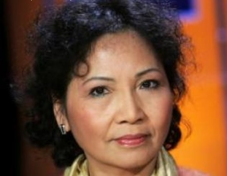
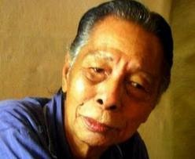
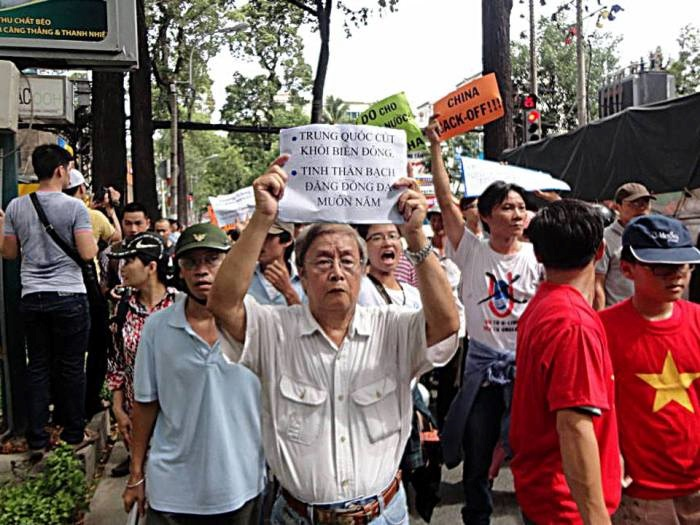
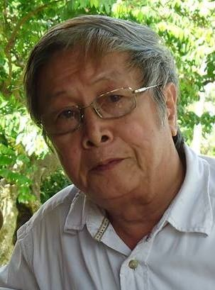

Dương Thu Hương với nghề nghiệp: chống đảng

Dương Thu Hương bị bắt ngày 14-4-1991 và được trả tự do 20/11/2001 vì “lý do nhân đạo”. Từ nước Nga xa xôi, đài phát thanh tư nhân Irina phát bài Dương Thu Hương, một bài học, một câu hỏi do chính Irina viết, với đoạn mở đầu: “Ai tin được lòng nhân đạo của một chính quyền muốn bỏ tù ai thì bắt, muốn thả thì buông, chẳng cần xét xử trước công chúng. Nhân đạo ở đây là bệnh tâm thần của một số người có quyền lực, đinh ninh mọi người khác đều có tội”.
Cuối tháng ba năm ấy (1991), khi tôi ở Mátxcơva về, Irina có nhờ tôi chuyển một bức thư (dán kín) cho Dương Thu Hương, lúc đó chị ở đường Ngô Thời Nhiệm Hà Nội. Cũng dịp ấy tôi gặp bác sĩ Nguyễn Khắc Viện, ông cũng đang trong tâm trạng chờ đến lượt mình “lên đường” vì ông mới gửi thư cho Trung ương trước Đại hội 7. Bác Viện bảo tôi: ở Pháp, một nhà văn như Dương Thu Hương thì không có gì đáng nói, nhưng nếu bắt Dương Thu Hương như thế thì người ta xuống đường ngay, phản đối ầm ầm ngày. Còn ở ta thì đến giới trí thức cũng im re!
Phân tích về tình trạng ấy của giới trí thức Việt Nam, Irina lý giải trong bài viết kể trên: “Sau cơn ác mộng (chiến tranh - LPK) được chút tự do kiếm cơm, kiếm áo, hưởng chút không gian và thời gian của trời đất cũng là đủ mãn nguyện!”
Năm 2002, tôi ra Hà Nội, lúc đó đã là 10 năm sau khi Dương Thu Hương bị giam giữ 7 tháng 6 ngày, chị đã trở thành một nhà bất đồng chính kiến gay gắt nhất, có những phát biểu, những bài viết đanh thép lên án chế độ độc tài đương thời, nhiều nhà văn đã bị chị chửi thẳng vào mặt trước mọi người vì khi chị đi tù đã lên tiếng phê phán, bịa đặt về chị. Tôi ngỏ ý đến thăm Dương Thu Hương thì nhiều bạn văn nghệ sĩ khuyên tôi dại gì mà đến, có khi bị chửi vỗ mặt, bị đuổi ngay từ cửa. Tôi bình tĩnh trả lời: Nếu tôi có bị Dương Thu Hương nhổ vào mặt thì tôi thấy mình cũng xứng đáng nhận sự khinh bỉ đó. Vì, đường đường một đấng làm gì mà không bao giờ tôi dám ho he phát biểu một điều gì, dù biết người ta làm sai hoàn toàn, vô lý, vô đạo đức, vô pháp luật mà một “nhi nữ thường tình” như Dương Thu Hương lại dám dõng dạc lên tiếng. Thấy tôi nói thế, không ai khuyên tôi “lùi bước” nữa. Cuối cùng thì nhà thơ nổi tiếng Trúc Thông dẫn tôi đến thăm Dương Thu Hương tại một khu nhà tập thể ở quận Đống Đa. Cái tờ giấy viết tay Hương đưa cho tôi ghi địa chỉ của chị: “Dương Thu Hương - 8525818. P-308 nhà A8 khu Đống Đa Hà Nội” tôi còn giữ đến bây giờ. Năm 2002 Dương Thu Hương vẫn đẹp như xưa. Chị có nước da đen giòn, nói chuyện rất có duyên. Hôm đó là sau Tết, nhà còn chai rượu vang Bordeaux, hạt dưa bánh kẹo để tiếp khách. Bức ảnh tôi chụp Dương Thu Hương đang cắn hạt dưa duyên dáng vô cùng. Tất cả những người đàn bà trên Trái Đất này khi ngồi bệt, xếp bằng trên chiếu cắn hạt dưa đều rất hiền dịu, rất mong manh dù người đó là Dương Thu Hương. Tôi vẫn giữ tấm hình Dương Thu Hương ngồi trên nền nhà trải chiếu hoa, đề 24-2-2002 đó và đôi lúc còn đem ra hỏi bạn bè: Người thế này mà bắt bỏ tù à? Người thế này mà bảo là dữ dội, “đanh thép” à?
Nhưng khi Dương Thu Hương nói chuyện thì bất cứ người đàn ông đanh thép nào trên thế giới cũng phải thừa nhận mình đang ngồi trước một người phụ nữ đáng kính nể.
Chị bảo với chúng tôi: Em thấy tình thương đôi khi cũng là tội ác các anh ạ!
Thấy câu nói là lạ tai quá, tôi hỏi vì sao. Hương kể: Khi chị ở tù, cậu công an còn trẻ coi sóc chị, mỗi lần đưa cơm cho chị đều lót một tờ báo tuổi trẻ mới ở đít nồi để chị đọc. Chị biết là báo do cậu ta mua với đầy thiện chí. Khi trên có lệnh thả chị, cậu ta vui vẻ vào báo tin. Chị đã bảo với cậu ta: Về nói với cấp trên rằng, bà Hương bảo, bắt bà có lý do thì thả bà cũng phải nói lý do, nếu không bà không về.
Thế là Dương Thu Hương không chịu ra tù. Cậu công an vận động mãi, chị vẫn một điều như thế. Cuối cùng cậu ta buồn quá khóc! Hương hỏi vì sao, cậu ta nói nếu không vận động được chị ra tù thì cậu bị đuổi việc, và nếu bị sa thải thì bên nhà gái không cho làm đám cưới. Nói rồi cậu ta lại xụt xịt. Thương cậu ta quá nên Hương phải rời nhà tù!
Kể đến đây Hương bảo tôi và Trúc Thông: Vậy tình thương như thế các anh thấy có phải là tội ác không?
Trúc Thông thân với Dương Thu Hương nên anh yên lặng, có lẽ vì quen với cách nói năng, quen với lô gích của Hương rồi. Còn tôi thì choáng! Tôi chưa gặp ai dữ dội như Hương. Chị còn kể tiếp, khi thằng con chị nộp đơn thi đại học, trong lý lịch, phần nghề nghiệp của mẹ, chị ghi: Nghề nghiệp: chống Đảng. Khi chị ra đồn công an chứng lý lịch, chị thấy tất cả mọi người trong đồn đều giả vờ đi ra để coi mặt chị! Trưởng đồn nói: Chị Hương nên bỏ cái nghề nghiệp như thế này đi, nếu để thì nhất định cháu nó không được vào đại học đâu! Hương bảo với tôi: Nghĩ thương thằng con quá nên em đành phải gạch cái nghề nghiệp chống Đảng ấy đi. Như thế có phải tình thương cũng là tội ác không hai anh?
Chưa hết, Hương còn kể: lúc ở tù, “làm việc” với viên sĩ quan công an, chị nhìn vào mặt anh ta quát to: Anh đang thiếu chất, mặt mũi xanh xao thế này là thiếu chất. Lương anh không đủ nuôi vợ nuôi con, bọn ăn cắp ở trên nó ăn hết phần anh rồi, chúng nó đều trở thành tư bản đỏ rồi, anh phải dối lòng mà làm việc, tôi thương anh lắm, anh cũng nghĩ như tôi mà thôi!
Kể một thôi, rồi Hương nói với tôi và Trúc Thông: Em nói xong, viên sĩ quan run bần bật, vì anh ta thấy em nói đúng tim đen anh ta.
Văn sĩ Dương Thu Hương đã để lại cho văn học nước nhà nhiều tác phẩm giá trị. Nói cho công bằng thì sự nghiệp văn chương của chị thật đồ sộ. Tiểu thuyết có: Bên kia bờ ảo vọng, Hành trình ngày thơ ấu, Những thiên đường mù, Tiểu thuyết vô đề, Trốn vắng, Đỉnh cao chói lọi… Tập truyện ngắn có: Bông bần ly, Một bờ cây đỏ thắm, Ban mai yên ả, Đối thoại sau bức tường, Chân dung người hàng xóm, Chuyện tình kể trước lúc rạng đông, Vĩ nhân tỉnh lẻ… Chị là tác giả Việt Nam được dịch ra tiếng nước ngoài vào loại nhiều nhất. Có đến sáu tác phẩm được dịch sang tiếng Anh, Pháp, Đức… Bộ văn hóa Pháp đã trao Huân chương Văn nghệ Nghệ thuật (Chevalier des Arts et des Lettres) cho Dương Thu Hương. Tiểu thuyết Chốn vắng được đề cử giải Femina và nhận Giải thưởng Lớn của tạp chí Elle (Grand Prix de Elle) 2007. Năm 2009 giáo sư Joseph Pivado về Văn chương Anh ngữ của đại học Athabasca ở Alberta Canada đề cử chị ứng cử giải Nobel năm ấy. Theo ông, với Đông Nam Á và Trung Quốc thì nữ văn sĩ như Dương Thu Hương rất hiếm có.
Ngồi bút của Dương Thu Hương là ngồi bút dự báo, dẫn đường. Ngày những tác phẩm đầu tay của chị như Bên kia bờ ảo vọng, Những thiên đường mù… đã khác hẳn thứ văn chương “phải đạo” đương thời. Dương Thu Hương đã báo trước những “thiên đường vỡ chợ” mà nhà thơ Trần Mạnh Hảo vừa nhắc đến, vừa viết hôm nay (2013).
Là độc giả của hầu hết các tác phẩm của Dương Thu Hương từ rất sớm, tôi thấy chị đã làm đúng chức năng của một nhà văn là nhìn thấy những gì người ta không nhìn thấy. Đúng như nữ nhà báo Nga Irina viết: “Có những lúc một con người, một hành động, một tác phẩm hoàn toàn ăn khớp với một hoàn cảnh lịch sử, với hoài bão của đông người trong hoàn cảnh ấy. Lúc đó, con người đó biến thành một bài học sống, bài học kết thúc một thời đại, mở màn cho một thời đại khác”. Dương Thu Hương là một con người của một thời đại cũ, nhưng “chẳng thèm xin phép ai, chị ngang nhiên bước vào thời đại mới”. (Irina)
Tôi có cái “duyên” với Dương Thu Hương về sự đồng điệu trong tư duy chính trị. Đó là vào năm 1992, một đoàn nhà báo, gồm toàn những nhà báo có “máu mặt”, tổ chức lên Đà Lạt nhằm bênh vực chị Đặng Việt Nga, kiến trúc sư và anh Phương cũng kiến trúc sư, hai chủ nhân của “Ngôi nhà trăm mái” đang bị địa phương bắt tháo dỡ vì nhiều lý do không chính đáng. Đường xa, hết chuyện bàn, tôi nêu câu hỏi: Nếu bây giờ phải chọn hai gương mặt tiêu biểu cho Việt Nam thế kỷ qua thì các vị chọn ai? Mọi người đều chọn nhân vật số một là Hồ Chí Minh. Vậy còn người thứ hai? Cả xe im lặng. Có vị nói: Võ Nguyên Giáp! Tôi phản đối và đưa ra nhân vật thứ hai là Dương Thu Hương! Cả xe nhao nhao phản đối. Có người hỏi: Dương Thu Hương là cái quái gì mà ông lại cho là nhân vật thứ hai sau Hồ chí minh? Tôi trả lời: chẳng là cái quái gì mà tự cho mình có quyền đứng ngang hàng và dám vỗ vai nhắc nhở các vị đang cai trị dân chúng, thì đó là dân chủ, là xã hội công dân chứ còn gì nữa! Độc lập và dân chủ là hai phạm trù lớn nhất, được cả dân tộc nhắc đến nhiều nhất trong thế kỷ qua. Độc lập thì Hồ Chí Minh là hình tượng, còn dân chủ thì đến Đại Tướng cũng không dám đối thoại với Tổng Bí thư Lê Duẩn, Dương Thu Hương là thảo dân mà lại tự cho mình quyền ăn nói ngang hàng với các vị đang đứng trên đầu dân, thì đó là hình tượng của dân chủ. Sau hình tượng của dân tộc phải là hình tượng của dân chủ… Chẳng thấy ai trên xe nói gì nữa!
Tôi nói tiếp: Lúc bị tù không án, Dương Thu Hương tuyên bố: Đảng hãy thử “chơi sang một lần” đem tôi ra tòa xét xử công khai trước dân chúng và để tôi tự bào chữa xem sao? Một đảng cầm quyền, có đủ nhà tù và quân đội trong tay mà không dám “chơi sang” đem xử công khai một người đàn bà trước công chúng thì đảng ấy mạnh hay yếu? Và người đàn bà ấy yếu hay mạnh thưa các vị? Vẫn không thấy ai nói gì! Tôi lại nói: Dương Thu Hương chính là dân chủ, sức mạnh của thời đại mà chúng ta cần phải có…
Ba năm trước, nhà thơ Hoàng Hưng ở Pháp về có đưa cho tôi cuốn tiểu thuyết Chốn vắng bản tiếng Việt, khổ to, dây cộp. Đây là một trong các tiểu thuyết của Dương Thu Hương được dịch sang tiếng Pháp từ khi chị định cư ở Paris năm 2006. Nghe nói Chốn vắng này bản tiếng Việt rất khó kiếm sau khi nó được dịch ra tiếng Pháp với tựa đề Terre des oublis. Đưa cho tôi, anh Hưng nói: ông đọc trước đi, xem thế nào? Tôi đọc nó cần mẫn trong năm ngày và thấy đề tài này ở Việt Nam thì bình thường, nhưng với dân Châu Âu thì rất hấp dẫn, và dưới ngòi bút của Dương Thu Hương thì lôi cuốn độc giả. Câu chuyện nói về chiến tranh. Một chị phụ nữ đã có chồng và chồng chị đi bộ đội thời chống Mỹ. Đã chết, có báo tử. Ở nhà vợ đi lấy chồng khác. Bỗng dưng sau chiến tranh người chồng cũ trở về. Ông Chủ tịch xã dẫn anh ta đến nhà vợ cũ và nói với cả ba người (một đàn bà, hai đàn ông): Không ai có lỗi cả… Lỗi là chiến tranh.
Là độc giả của hầu hết các tác phẩm của Dương Thu Hương, tôi thích nhất tập truyện Chuyện tình kể trước lúc rạng đông. Nếu gặp tác giả tôi phải xin lại cuốn đó, vì cuốn của tôi thất lạc mất rồi. Tôi nghĩ rằng nếu Dương Thu Hương cho tái bản cuốn này thì hay biết mấy. Chắc chắn có nhiều độc giả.
Lúc chia tay Trúc Thông và tôi trong cái buổi sáng mùa xuân năm 2002 đáng nhớ đó, Hương tiễn chúng tôi xuống tận đường, chị không quên nhắc lại lần gặp tôi tại Sài Gòn ở cơ quan đại diện nhà xuất bản Hội Nhà văn. Lần đó, vô Sài Gòn, chị kể, hễ đến cơ quan nào, biết chị là Dương Thu Hương thì người đang nói chuyện với chị đều bỏ chạy!
Câu cuối cùng Dương Thu Hương nói với chúng tôi trong cái buổi sáng đẹp trời đầu năm 2002 đó là: Chúng nó mới cắt điện thoại của em. Em đã gọi điện cho công an nói rằng: bảo thằng Phan Văn Khải mắc ngay điện thoại lại cho bà, không thì bà không để yên cho đâu! Em nói rất to cốt cho cả khu phố nghe.
Dương Thu Hương là người như thế. Nhiều người bảo chị đanh đá! Nhưng không thấy ai bảo thằng vô cớ cắt điện thoại là thằng lưu manh. Dân tộc ta “không có truyền thống dân chủ” như bác sĩ Nguyễn Khắc Viện nói là hoàn toàn đúng.

Nhạc sĩ Tô Hải
Trong hàng ngũ những người đấu tranh dân chủ ở Việt Nam có một người lính già anh dũng luôn xông pha ở hàng đầu trận tuyến. Đó là nhạc sĩ Tô Hải, năm nay đã 87 tuổi.
Nhân dân Sài Gòn không bao giờ quên buổi sáng đẹp trời ngày 16 tháng 12 năm 2007, trong cuộc biểu tình chống Trung Quốc xâm lược biển đảo VN, có một ông già 80 tuổi, chống gậy đứng giữa đám biểu tình, vẻ mặt đầy phẫn nộ, khua gậy lên chỉ vào mặt một người đàn bà mặc áo màu xám, hét to: “Con này là chỉ điểm cho công an bắt người!” “Con này” mà Tô Hải chỉ mặt là người phụ nữ cao to, đứng quan sát xem ai hô to, ai hăng hái nhất rồi chỉ cho công an chìm, công an nổi “ẳm” đi! Cái “con này” ấy là Nguyễn Thị Quyết Tâm, sau này được thăng chức Chủ tịch Hội đồng Nhân dân TPHCM, đại biểu quốc hội. Và trong phiên họp quốc hội tháng 6/2013 vừa qua đã đứng lên “thay mặt” 10 triệu nhân dân TPHCM cho rằng nên giữ tên nước như hiện nay, không cần đổi(!)
Những kẻ chỉ điểm bắt người biểu tình chống TQ như Nguyễn Thị Quyết Tâm được thăng quan tiến chức, được chế độ cộng sản xem là nòng cốt của chế độ, phải được ghi rõ họ tên, chúng đã được những người biểu tình hôm ấy quay phim để lưu giữ đời đời cho con cháu biết những gương mặt bán nước hại dân, còn nghệ sĩ Tô Hải thì đi vào lịch sử chống TQ bành trướng.
Tô Hải sinh ngày 24/9/1927 tại Hà Nội, nguyên quán Tiền Hải, Thái Bình. Mười chín tuổi, như mọi thanh niên trí thức yêu nước, ông xung phong vào Vệ Quốc Đoàn theo tiếng gọi non sông lên đường cứu nước. Ông tâm sự: Lúc ông đi theo Việt Minh cứu nước, bố ông là một công chức thời Pháp, có học, có đọc sách, đã khuyên ông không nên theo vì đó thực chất là cộng sản, nếu không nghe thì cứ đi, nhưng đừng về nhà nữa. Tô Hải lúc đó đang ở thời kỳ “thơ” trong những “ngây thơ” mà Nguyễn Khắc Viện đã viết. Chỉ đến Cải cách ruộng đất sau đó hơn chục năm, thời kỳ “thơ” mới hết và chuyển sang thời kỳ “ngây” như ông Viện nhận ra lúc cuối đời. Tô Hải nhận ra mình “ngây” thì quá muộn! Không còn đường về nữa! Ông phải tiếp tục sống như một người “cộng sản đích thực” (ông được kết nạp Đảng năm 1949), tức là dối trá để tồn tại. Chính vì thế mà ông đã viết cuốn Hồi ký của một thằng hèn (NXB Tiếng Quê Hương ở Virginia Hoa Kỳ ấn hành năm 2009) để xám hối! Chính tôi là người viết lời giới thiệu cho cuốn sách này.
Việc viết giới thiệu này là cả một chuyện rất khôi hài. Khi những người biên tập cuốn sách yêu cầu người viết giới thiệu nó tốt nhất nên là một người đang ở trong nước, nhạc sĩ Tô Hải, tác giả của Nụ cười sơn cước, Tiếng hát người chiến sĩ biên thùy đã nhờ tôi. Lý do: Tôi là người đầu tiên và duy nhất đã đọc bản thảo đó ở trong nước. Số là, tôi ra Nha Trang thăm Tô Hải, thấy ông đang cặm cụi dành toàn bộ thời gian cho cuốn sách. Tôi đã đọc bản thảo này trong một xóm nhỏ ở thành phố biển Nha Trang. Nhưng các vị biên tập cuốn sách ở nước ngoài lại cho tôi là “công an của Việt Cộng” nên không muốn lời giới thiệu sách đứng tên tôi. Tô Hải phải email sang nói rõ, tôi là nhà báo, không phải công an. Các vị đó vẫn không tin, nói rằng gia đình tôi có nhiều người làm công an nên “cài” tôi vào.
Cuối cùng thì lời giới thiệu vẫn là bài viết của tôi, do sự “can thiệp” của Tô Hải. Thêm nữa, cũng chẳng ai trong nước đã đọc bản thảo cuốn này để viết giới thiệu như mong muốn của những người in sách! Điều đáng buồn là từ sự việc này là cả dân tộc ta đã nghi kỵ nhau, không ai tin ai nữa. “Đấu tranh giai cấp” đã dẫn đến tình trạng đó ở VN.
Chưa hết, sau khi sách ra đời, một “nhà báo” ở nước ngoài ký tên là Việt Thường đã “ném đá” cuốn sách, tố cáo tôi là “đại tá” công an, Tô Hải là “đại úy” công an, chịu sự “lãnh đạo” của tôi! Xem ra Việt Thường mới chính là người được “cài” ra nước ngoài nhằm gây nhiễu trên văn đàn. Vì không bác bỏ được sự thật mà cuốn sách viết ra, thì tốt nhất là vu cho Tô Hải là công an để không ai tin nội dung sách. Việt Thường là ai thì tôi biết quá rõ. Anh ta tên là Hùng, nhà ở đầu phố Phan Chu Trinh Hà Nội. Bố là người gốc Hoa; bà Phương mẹ anh ta được bà con khu phố gọi là bà Tham Phương. Nhà có bốn anh chị em, anh cả là Đại Văn, rồi đến Hùng Văn, Cường Văn. Bà chị Hùng Văn tên là Bích. Cường Văn cùng tuổi với tôi, đang dạy Anh văn ở TPHCM. Hùng Văn thời nhỏ là một tay du đãng, lớn lên có làm phóng viên cho một tờ báo ở Hà Nội rồi hành nghề bói toán, sau đó ra nước ngoài. Sở dĩ tôi biết rành rẽ Việt Thường như vậy vì nhà anh ta ở đầu phố Phan Chu Trinh, nhà tôi ở đầu phố Hàm Long, chỉ cách nhau “một tầm súng ngắn”! Ngày nhỏ, tôi vẫn chơi với Cường Văn, vẫn sang nhà Cường Văn chơi. Đó là một biệt thự nhỏ, đẹp, của ông Tham Phương giàu có, có cổ phần ở mỏ than Hồng Gai.
Bây giờ, mỗi lần tôi đến chơi, Tô Hải thường nói đùa: Đại tá đến thăm đại úy đây!
Trên thế giới mạng Internet một thập kỷ qua, Tô Hải là một blogger già nhất, ông có cả một trang web “Tô Hải’s blog” hàng tuần đều có bài. Ông viết blog trong tình trạng đau yếu của tuổi già, kê lưng vào gối mà gõ máy tính. Nhưng chỉ vắng bóng ông trên mạng ít bữa là các độc giả trẻ người Việt khắp nơi trong ngoài nước lo lắng, mong mỏi, email thăm hỏi. Ông là một chứng nhân của lịch sử, những chuyện ông viết ra khiến lớp trẻ khao khát sự thật đón đọc say mê. Nhưng không phải Tô Hải chỉ viết cái đã qua, hàng ngày ông đọc Le Monde trên mạng, nắm bắt tình hình thế giới, trong nước và bình luận kịp thời những vấn đề nóng bỏng của đất nước. Có lần đài phát thanh Pháp RFI phỏng vấn ông, Họ ngạc nhiên vì những thông tin ông đưa ra. Họ hỏi tin ấy ở đâu ra? Ông trả lời: Tôi đọc trên Le Monde sáng nay. Phóng viên thú nhận. Từ sáng đến giờ chưa đọc Le Monde!
Công bằng mà nói, với những huân chương mà ông đã nhận được, với Giải thưởng Nhà nước về VHNT đợt 1, ông có thể ngồi rung đùi mà hưởng bổng lộc, đến các hội nghị, lễ kỷ niệm này nọ mà ngồi ghế danh dự trong làng nhạc sĩ VN, nhận bao thư và ngậm miệng ăn tiền dài dài như các văn nghệ sĩ lão thành khác (!) Nhưng vận nước không để ông ngồi yên. Ông nghĩ đến con cháu, nghĩ đến thế hệ trẻ mai sau sẽ sống ra sao nếu bọn Tàu ô gặm dần cái đất nước mà ông đã tốn bao xương máu để gìn giữ cho đến hôm nay. Ông tâm sự: Từ ngày tôi viết blog, mấy thằng nhạc sĩ xưa kia vô Sài Gòn là nhào đến tôi bây giờ lỉnh hết, họ sợ liên lụy. Giới nhà văn của ông còn đỡ chứ giới nhạc cùng thời với tôi chúng nó hèn quá! Buồn cho đất nước quá!
Tôi an ủi ông: Những kẻ ngậm miệng ăn tiền ấy có gì đáng nói. Bù lại, hiện anh có hàng vạn bạn đọc trên thế giới, đó chẳng phải là đáng vui hay sao?
Vì ông là người bất đồng chính kiến mà công an đã đến “hỏi thăm” cái xe bán bánh mì của vợ ông ở đầu phố, công an và chính quyền phường đến tận nhà “khuyên giải” ông đừng viết blog nữa!
Viết đến đây tôi bỗng nhớ: Năm 1991, tại Hồng trường Mátxcơva, tôi đứng giữa những người già, rất già, râu tóc bạc phơ, đang cầm biểu ngữ đứng biểu tình trong tuyết giá. Một người bạn VN nói với tôi: Những người già như thế này đi biểu tình không phải như sinh viên Nam Hàn, Singapore đi biểu tình đòi một cái gì cụ thể cho ngày hôm sau đâu, mà họ vì trách nhiệm với lương tâm, vì một tương lai, vì một cái gì cao cả hơn đối với đất nước.
Những gì mà nhạc sĩ Tô Hải đã và đang làm, chính vì “những điều cao cả hơn đối với đất nước” VN yêu quí của ông.
Sáng ngày 9/12/2012, khoảng hơn mười giờ, khi tôi từ cuộc biểu tình phản đối Trung Quốc xâm phạm chủ quyền Việt Nam trên Biển Đông về đến đầu ngõ thì thấy lực lượng công an, dân phòng vây kín các ngả đường quanh nhà tôi. Họ đang bao vây phong tỏa nhà văn Phạm Đình Trọng đó. Tôi biết có cuộc hùng hổ vây ráp bất thường này vì nhà văn đã gọi điện cho tôi.
Hưởng ứng lời kêu gọi biểu tình của các nhân sĩ, trí thức, nhà văn Phạm Đình Trọng hẹn tôi bảy giờ sáng chủ nhật ngày 9 tháng mười hai gặp nhau ở bến xe buýt đường Cộng Hòa rồi cùng lên Nhà Hát Lớn dự biểu tình. Bảy giờ xe buýt đến, vẫn chưa thấy anh Trọng, tôi đành lên xe đi trước và tin rằng sẽ gặp lại anh Trọng ở biểu tình. Nhưng anh Trọng không thực hiện được lời hẹn vì bị đám công sai ngăn cản.

Nhà văn Phạm Đình Trọng xuống đường biểu tình chống Trung Quốc vào ngày 11/5/2014
Trong một bài viết trên mạng Internet, nhà văn Phạm Đình Trọng kể rằng, sáng sớm anh vừa ra khỏi cửa thì viên sĩ quan công an tên Tuấn ở công an thành phố, trước đây đã “làm việc” với anh nhiều lần, cùng đám đông công an và dân phòng đã rình sẵn ở cửa nhà anh từ bao giờ, xô đến, cản không cho anh ra khỏi nhà. Thấy đám công sai trắng trợn xâm phạm quyền con người và quyền công dân, nhà văn cương quyết lách qua đám công sai đi ra đường. Viên công an Tuấn đi xe máy liền lao xe chặn ngang trước mặt nhà văn. Nhà văn lấy tay đẩy Tuấn ra thì Tuấn lu loa: A, ông đánh tôi. Ối! Ối! Đau quá! Ông phải đi với tôi đến cơ quan công an giải quyết việc ông hành hung tôi. Hơn chục công sai khỏe quây tròn quanh nhà văn. Viên sếp an ninh vừa dùng xe máy ép vừa lải nhải đòi đưa nhà văn vào đồn công an nhưng làm việc phi pháp nên họ không dám mạnh tay, nhà văn vẫn đến được bến xe buýt. Bị đám công sai đông đúc ngăn chặn, không thể lên được xe buýt, nhà văn liền thẳng đường đến nhà tôi, cách bến xe buýt không xa. Thế là đám công an điều động thêm lực lượng dân phòng của cả hai phường 12 và 13 quận Tân Bình được huy động cho cuộc bao vây dưới sự chỉ huy của công an thành phố, công an quận!
Sở dĩ có trò hề trên là vì nhà văn Phạm Đình Trọng đã cùng 41 trí thức, nhân sĩ khác ký tên trong thư ngày 27.7.2013 yêu cầu lãnh đạo thành phố Hồ Chí Minh tổ chức biểu tình phản đối Trung Quốc ngang ngược coi Biển Đông thuộc lãnh thổ Việt Nam như ao nhà của Trung Quốc, mặc sức ngang dọc, bắt bớ, bắn giết dân Việt Nam đánh cá trên biển Việt Nam. Yêu cầu chính đáng của 42 trí thức cũng là đòi hỏi bức thiết của đông đảo người dân không được lãnh đạo thành phố đáp ứng, năm trí thức, năm nhà hoạt động xã hội nổi tiếng là giáo sư Tương Lai, luật gia Lê Hiếu Đằng, bác sĩ Huỳnh Tấn Mẫm, nhà báo Hồ Ngọc Nhuận, nhà báo Lê Công Giàu liền đưa ra lời kêu gọi thực hiện cuộc biểu tình sáng chủ nhật ngày 9 tháng mười hai. Quyết chống phá cuộc biểu tình ôn hòa, chính đáng của người dân, từ đêm mồng tám lực lượng công an thành phố Sài Gòn cùng lực lượng dân phòng được tung ra phong tỏa, chặn cửa nhà 42 trí thức kí tên đòi biểu tình.
Trước đó, đến dự phiên tòa công khai xử ba thành viên trong câu lạc bộ Nhà báo Tự do: Điếu Cày Nguyễn Văn Hải, Tạ Phong Tần, Phan Thanh Hải, những công dân yêu nước đã quyết liệt lên án Trung Quốc xâm lược biển đảo Việt Nam, nhà văn Phạm Đình Trọng cũng bị công an bắt ở sân tòa án thành phố đưa về công an phường Bến Thành quản thúc đến cuối ngày công an mới áp giải nhà văn về tận nhà!
Từ Sài Gòn phương Nam xa xôi, nhà văn ra Hà Nội, đến nhà tù số 5, Yên Đình, Thanh Hóa thăm người tù lương tâm, tiến sĩ Cù Huy Hà Vũ. Bài kí sự về chuyến đi thăm tù này của anh đã gây xúc động mạnh mẽ cho người đọc. Bốn mươi năm trước, cũng trên con đường này, người lính Phạm Đình Trọng hành quân ra mặt trận chống Mỹ cứu nước, ba lô súng đạn nặng trĩu trên vai “mà lòng phơi phới dậy tương lai” như một câu thơ của thời đó đã viết. Vậy mà ngày nay, đi lại con đường năm xưa bằng ô tô hiện đại êm ru, có máy lạnh mát mẻ, trong lòng người lính nhà văn lại nặng trĩu nỗi buồn. Vì con đường đưa những trái tim yêu nước, đưa những người lính trẻ ra trận đánh giặc giữ nước ngày nào nay con đường đó lại dẫn người lính năm xưa đến một nhà tù, đến thăm một trí thức phải ngồi tù chỉ vì yêu nước, chỉ vì đã thẳng thắn can ngăn những việc làm phản dân hại nước của những người cầm quyền. Thời giặc giã, người dân yêu nước phơi phới một niềm tin hăng hái ra trận đánh giặc. Giặc tan rồi, những người nặng lòng với nước lại phải mang nặng trĩu nỗi buồn vận nước. Người bị tống vào tù như tiến sĩ Cù Huy Hà Vũ. Người chưa bị vào tù đều khắc khoải, bơ vơ và phải lưu vong ngay trên quê hương mình như nhà văn Phạm Đình Trọng.
Ra mặt trận cùng thế hệ, cùng nhân dân thời đất nước có giặc. Xuống đường cùng trí thức, cùng tuổi trẻ biểu thị ý chí quyết giữ gìn toàn vẹn giang sơn gấm vóc. Đến phiên tòa, đến nhà tù chia sẻ với những khí phách Việt Nam bị giam cầm. Một người lính, một nhà văn luôn đi cùng nhân dân, cùng thời đại như vậy không thể đi cùng đảng Cộng sản Việt Nam khi đảng Cộng sản Việt Nam không còn đi cùng nhân dân Việt Nam, khi nhà văn đã nhận ra “đảng đã đưa dân tộc Việt Nam đi từ thảm họa này đến thảm họa khác”. Sau bốn mươi năm tận tụy cống hiến, hy sinh cho đất nước, cho nhân dân với tư cách đảng viên Cộng sản, sau bốn mươi năm nâng niu tấm thẻ đảng viên Cộng sản trên túi áo ngực nơi nhịp đập trái tim nhà văn luôn cùng nhịp đập với cuộc sống của nhân dân, đất nước, nhà văn Phạm Đình Trọng đã dứt khoát chia tay với đảng Cộng sản bằng “Thông báo từ bỏ đảng tịch đảng viên Cộng sản” gửi cho tổ chức đảng ngày 29 tháng mười một năm 2009.
Nhà văn Phạm Đình Trọng tuyên bố từ bỏ đảng Cộng sản là sự thức tỉnh của một thế hệ bị lừa gạt, là sự cảnh báo về sự sụp đổ của một lý tưởng huyễn hoặc được thực hiện bằng bạo lực áp đặt, phản con người, là sự dũng cảm, trung thực của một người chân chính, một nhân cách văn hóa.
Nhà văn Phạm Đình Trọng khai trừ đảng Cộng sản ra khỏi trái tim anh gần nửa năm, tổ chức đảng mới bối rối làm thủ tục khai trừ anh. Nhà văn Phạm Đình Trọng viết về việc làm lố bịch này của tổ chức đảng: “Dù tôi đã tự ra khỏi đảng nhưng đảng vẫn giành cho đảng quyền khai trừ tôi. Nhận cái văn bản thể hiện cái quyền của đảng, trong tôi chợt có suy nghĩ xót xa về đảng: Đây là cái sai khai trừ cái đúng, cái giả dối khai trừ cái trung thực, cái vô cảm khai trừ cái mẫn cảm và những rô bốt khai trừ con người. Khi một con người, một tổ chức đang tha hóa thì sự khai trừ này đang diễn ra trong chính con người đó, tổ chức đó!”
Giọng đượm buồn, nhà văn Phạm Đình Trọng kể với tôi về phiên họp thể hiện quyền uy của đảng với anh nhưng anh vẫn nhận ra không khí chợ chiều của cuộc họp đó. Người ta cố huy động nhiều thành phần, nhiều người đến dự. Các ban bệ trên cơ quan quận ủy, đảng ủy phường, chi ủy, tổ đảng. Thêm cả hội Cựu chiến binh nữa. Đông mà vẫn tẻ nhạt. Không còn có được không khí sôi sục trấn áp với kẻ từ bỏ đảng, kẻ công khai phản bác lý tưởng của đảng như thời Cải cách ruộng đất, thời Nhân Văn Giai Phẩm, thời xét lại chống đảng. Những ánh mắt thờ ơ, dửng dưng. Những lời phát biểu thờ ơ, sáo mòn, trống rỗng. Thờ ơ nhìn kẻ rời bỏ đội ngũ. Thờ ơ ra về.
Mấy ngày sau nhà văn tình cờ gặp lại ông phó ban kiểm tra đảng ủy đã dự cuộc họp đó. Ông lấm lét nhìn trước nhìn sau mới dám nói nhỏ với nhà văn mấy câu chia sẻ, đồng tình rồi ông lẩn nhanh. Đảng hôm nay với những đảng viên như vậy thì đúng như nhà văn đã nhận xét, đảng chỉ còn cái giả dối, không có sự trung thực, đảng chỉ còn những rô bốt, không còn con người, không còn lý tưởng cách mạng cao đẹp. Đảng đó dù có kết nạp thêm bao nhiêu đảng viên mới nữa thì chỉ có thêm những kẻ cơ hội, vào đảng để được chia chác mẻ cá cuối cùng trước khi con tàu đắm hẳn!

Nhà văn Phạm Đình Trọng
Tôi đã đọc sách văn chương, truyện ngắn, bút ký, tùy bút của nhà văn Phạm Đình Trọng và tôi đã có bài viết về tập sách chân dung văn học và kí sự của nhà văn, tập Bức Chân Dung Để Lại, đăng trên báo Văn Nghệ của hội Nhà Văn Việt Nam. Tôi đã đọc tất cả những thiên chính luận của nhà văn Phạm Đình Trọng viết về cái nhìn và tấm lòng nhà văn với hiện tình đất nước. Nhiều bài tôi là người đọc đầu tiên khi bài viết mới là bản thảo vừa hoàn thành, chưa đăng ở đâu cả.
Trong truyện, văn của anh nhẹ nhàng trữ tình bao nhiêu thì trong chính luận, văn của anh lại mạnh mẽ, quyết liệt, hào sảng bấy nhiêu. Phạm Đình Trọng là người ít nói, anh thuộc dạng cả nghĩ mà ngại nói, đôi khi vụng nói nữa. Nhưng thật ngạc nhiên trong văn chính luận anh như một người hùng biện, mạch văn cuồn cuộn, sôi sục lạ thường, ý tứ trùng trùng lớp lớp, khúc chiết, mạch lạc, có sức thu hút và thuyết phục.
Bất chấp thực tế chủ nghĩa Mác Lenin sai lầm, tội lỗi đã hoàn toàn thất bại, sụp đổ trên thế giới, đã bị loài người loại ra khỏi đời sống chính trị thế giới; bất chấp thực tế chủ nghĩa Mác Lenin đã mang lại nghèo đói, trì trệ kéo dài cho đất nước Việt Nam, mang lại quá nhiều đau khổ, quá nhiều máu và nước mắt cho nhân dân Việt Nam, những người lãnh đạo Cộng Sản Việt Nam vẫn cố duy trì chủ nghĩa Mác Lenin để cố duy trì sự độc quyền cai trị của đảng Cộng Sản Việt Nam. Trước sự ngoan cố tội lỗi đó, trước sự lì lợm nhẫn tâm đó của những người lãnh đạo Cộng sản, nhà văn Phạm Đình Trọng không thể làm ngơ. Với lý lẽ thấu đáo, với câu văn bình dị mà giàu cảm xúc, không viện dẫn kinh sách, rất ít từ ngữ chính trị khô khan, trong các bài chính luận của mình, nhà văn Phạm Đình Trọng đã tập trung chỉ ra sự huyễn hoặc, sai lầm, phản con người, phản tiến hóa của chủ nghĩa Mác Lenin.
Nhà văn lược lại lịch sử phát triển của xã hội loài người đi từ hoang dã đến văn minh, đi từ bầy đàn đến cá nhân: “Cuộc đời mỗi người đều có ba giai đoạn: Tuổi ấu thơ ngơ ngác, tuổi còn bị sai khiến, áp đặt, có nhà triết học coi đó là tuổi lạc đà, phải chia động từ “mày phải”, tuổi của bầy đàn, chưa có cá nhân, cá nhân còn lẫn trong bầy đàn, đánh mất trong bầy đàn. Đến tuổi trưởng thành, con người nhận thức được thế giới và nhận thức được bản thân, cá nhân được hình thành tách ra khỏi bầy đàn, cá nhân có tư duy, có chính kiến riêng cần được nhìn nhận, cần được khẳng định sự có mặt trong cuộc đời, đó là tuổi sư tử, tuổi chia động từ “Tôi là”. Đến giai đoạn xế chiều, con người lại trở về thời ấu thơ, lại trở về bầy đàn, tìm đến đám bạn cùng giới tính. Xã hội loài người cũng phải qua thời ấu thơ là thời bầy đàn bộ lạc nguyên thủy, thời phong kiến trung cổ, chỉ có lãnh chúa, chủ đất mới có cá nhân, còn lại chỉ là đám đông lao xao, chỉ là công cụ sản xuất trong tay chủ đất và công cụ bạo lực trong tay vua chúa. Bước vào thời văn minh công nghiệp, xã hội loài người mới bước vào thời trưởng thành. Khoa học kỹ thuật cho con người sức mạnh khẳng định mình, cho trí tuệ làm chủ bản thân và làm chủ thế giới. Con người có mặt trong xã hội là những cá nhân với tư tưởng, chính kiến riêng phải được thể hiện và phải được xã hội nhìn nhận, tôn trọng. Chỉ đến xã hội công nghiệp của chủ nghĩa tư bản mới có cá nhân, mới có Cái Tôi trưởng thành” (Bi Kịch Việt Nam).
Để rồi nhà văn đau xót nhận ra loài người vừa đi đến văn minh công nghiệp, những cá nhân vừa được tách ra từ bầy đàn thì Chủ nghĩa Mác Lenin lại xóa bỏ cá nhân, đưa xã hội loài người trở về bầy đàn: “Học thuyết đấu tranh giai cấp của chủ nghĩa Mác Lenin vươn hai cánh tay bạo liệt ra: Cánh tay kinh tế, công hữu hóa tư liệu sản xuất, xóa bỏ quyền làm chủ tư liệu sản xuất của người dân, lạnh lùng bóp nghẹt cuộc sống. Cánh tay chính trị, chuyên chính vô sản, thô bạo nắm cổ người dân, định đoạt số phận người dân theo ý muốn của quyền lực vô sản chứ không theo pháp luật. Công hữu hóa tư liệu sản xuất đã xóa bỏ cá nhân trong toàn bộ đời sống xã hội… Chủ nghĩa mác Lenin chỉ nhìn nhận sự có mặt của đảng Cộng Sản, chỉ có cá nhân của những người lãnh đạo đảng Cộng sản! Người dân dù là nhà văn hóa, nhà khoa học, là trí thức, nghệ sĩ kiệt xuất cũng chỉ là quần chúng, là bầy lạc đà, là công cụ trong tay đảng Cộng sản như thời phong kiến trung cổ chỉ có cá nhân lãnh chúa, chủ đất, còn lại chỉ là bầy đàn, là công cụ sản xuất và công cụ bạo lực!” (Bi Kịch Việt Nam)
Nhà văn khẳng định dù chậm phát triển, xã hội Việt Nam cũng đã đi đến Cái Tôi cá nhân trưởng thành: “Trên đường đi đến đô thị của văn minh công nghiệp, những năm ba mươi thế kỷ hai mươi, xã hội Việt Nam chợt đến phố huyện đã để lại dấu ấn trong văn chương là Tự Lực Văn Đoàn với những câu chuyện tình phố huyện, là Thơ Mới ghi lại nỗi thảng thốt sung sướng phát hiện ra Cái Tôi cá nhân trong cuộc đời và sự khắc khoải, bền bỉ đòi hỏi sự nhìn nhận của xã hội đối với Cái Tôi thiêng liêng đó.
Cái Tôi cá nhân thức dậy, năng lực sáng tạo của những cá nhân được giải phóng đã tạo ra lịch sử Việt Nam thời trước Cộng sản những tên tuổi lớn. Về văn hóa có Phạm Quỳnh, Nguyễn Văn Vĩnh, Trần Trọng Kim, Dương Quảng Hàm, Hoàng Xuân Hãn, Phan Khôi, Bùi Kỉ, Đào Duy Anh, Nguyễn Mạnh tường, Vũ Trọng Phụng, Phạm Cao Củng, Nam Cao, Phạm Huy Thông, Nguyễn Tuân, Thế Lữ. Về kinh tế có Bạch Thái Bưởi, Nguyễn Sơn Hà, Trịnh Văn Bô, Đỗ Đình Thiện, Nguyễn Thị Năm. Về chính trị có Phan Châu Trinh, Phan Bội Châu, Nguyễn Thái Học, Lương Văn Can, Lương Ngọc Quyến”. (Bi Kịch Việt Nam)
Những cá nhân đó đang thực hiện nhiệm vụ lịch sử, đang kể lại dấu ấn Cái Tôi trong lịch sử: “Những người Việt Nam kiệt xuất đó với tầm văn hóa và lòng tự hào dân tộc đang lặng lẽ chuẩn bị nền tảng tư tưởng, nền tảng văn hóa và cả nền tảng kinh tế, xã hội cho một xã hội mới và đang bền bỉ thức tỉnh nhân dân, tổ chức lực lượng chính trị cho cuộc đấu tranh với thực dân xâm lược Pháp giành độc lập dân tộc. Con đường đấu tranh bất bạo động bằng tư tưởng, văn hóa, kinh tế, chính trị theo con đường của Phan Châu Trinh vạch ra, theo con đường của Mahatma Gandhi, theo triết lí Phương Đông dựa vào lòng người “lấy chí nhân thắng bạo tàn”, không đẩy người dân tay không ra đối đầu với súng đạn thực dân, tiết kiệm xương máu cho dân là con đường lâu dài nhưng là con đường đồng hành với tiến trình phát triển của lịch sử loài người và nền độc lập giành được bằng con đường đó là nền độc lập thực sự và bền vững, nền độc lập không bị phụ thuộc vào những thế lực chính trị bên ngoài. Mahatma Gandi dẫn dắt nhân dân Ấn Độ đấu tranh bất bạo động với đế quốc Anh đã giành được độc lập. Theo logic lịch sử, tiến trình đi đến độc lập như Ấn Độ cũng đang lặng lẽ, bền bỉ và vững chắc diễn ra ở Việt Nam”.
Nhưng những người Cộng sản mang chủ nghĩa Mác Lenin về Việt Nam đã “đưa nhân dân Việt Nam vào những cuộc cách mạng bạo lực, vào cuộc chiến tranh ý thức hệ đẫm máu, chia trận tuyến đấu tranh giai cấp, thanh toán địch - ta vào trong từng con người, trong từng gia đình, trong từng cơ quan, đơn vị, phân chia trận tuyến giai cấp, thanh toán địch - ta trong lòng dân tộc Việt Nam, đẩy nhân dân vào cuộc sát phạt, tiêu diệt, xung đột, giằng xé, đấu đá, bất ổn, ly tán của dân tộc suốt từ giữa thế kỷ hai mươi đến tận hôm nay vẫn chưa chấm dứt. Sát phạt, xung đột, giằng xé, đấu đá, bất ổn, ly tán để xóa bỏ Cái Tôi cá nhân vừa thức tỉnh trong trí thức, trong giới chủ, trong thanh niên, học sinh thành phố, để chỉ còn Cái Tôi quyền uy của hơn chục yếu nhân nắm vận mệnh đảng Cộng sản Việt Nam, quyết định số phận cả dân tộc Việt Nam” (Bi Kịch Việt Nam)
Đảng Cộng sản Việt Nam kiên định chủ nghĩa Mác Lenin để hướng tới mục tiêu Xã hội Chủ nghĩa bạo lực chuyên chính vô sản. Xã hội mà đảng Cộng sản hướng tới, với nhà văn Phạm Đình Trọng chỉ là: “Chủ nghĩa Xã hội cho những người lãnh đạo Cộng sản quyền hành vô hạn, lại tước đoạt của dân mọi quyền con người, mọi quyền công dân. Nhân dân Việt Nam là nạn nhân thê thảm nhất của Chủ nghĩa Xã hội. Người dân chỉ là công cụ để Nhà nước vô sản sử dụng làm cách mạng giành chính quyền cho Đảng và tiến hành chiến tranh vì mục tiêu giai cấp của Đảng. Người dân công cụ chỉ được sử dụng làm quần chúng cách mạng trong đấu tranh giai cấp, trong đấu tố, hãm hại những người lương thiện thức tỉnh. Người dân chỉ là công cụ nên không có quyền tư hữu, không có quyền có tài sản riêng, kể cả tài sản vật chất như đất đai, đến tài sản văn hóa tinh thần như tư tưởng. Người dân không được có tư tưởng chính kiến riêng. Mọi việc đã có Đảng và Nhà nước lo!” (Không Thể Đi Ngược Ý Chí Nhân Dân).
Mục tiêu Xã hội chủ nghĩa là hư vô nhưng vì cái mục tiêu hư vô đó đảng Cộng sản sử dụng bạo lực sắt máu với dân là sự thật hiển nhiên. “Đảng Cộng sản Việt Nam đã dùng bạo lực tàn nhẫn ứng xử với dân tộc Việt Nam văn hiến, đã đem lại cho dân tộc Việt nam gần một thế kỷ cách mạng, chiến tranh đẫm máu, ly tán dân tộc, tan hoang đất nước”. (Bi Kịch Việt Nam)
Trong đoàn nhà văn Việt Nam đi thăm Ấn Độ trở về, nhà văn viết: “Giành được độc lập bằng đấu tranh chính trị và đấu tranh nghị trường nên Ấn Độ có nền nếp dân chủ đại nghị từ ngày đó. Nhà nước dân chủ Ấn Độ chỉ có thể tồn tại được bằng sự chấp thuận của người dân. Còn chúng ta suốt hơn nửa thế kỷ giành và giữ chính quyền bằng bạo lực, chúng ta đã coi chính quyền tồn tại bằng bạo lực như một lẽ đương nhiên, như điều bình thường. Một xã hội dân sự yên hàn nhưng nhà nước Cộng sản vẫn chuyên chính với dân. Coi những ý kiến của dân khác biệt với chính quyền đều là thế lực thù địch. Dùng bạo lực trả lời những ý kiến khác biệt của dân thì không thể là bình thường. Xài bạo lực quá lâu đã trở thành nghiện. Bạo lực đã trở thành ma túy của nhà nước Cộng sản Việt Nam! Nhà nước quá nghiền, quá ỷ vào bạo lực, làm sao đất nước có dân chủ!” (Nghĩ suy từ Ấn Độ).
Thẳng thắn, trung thực bộc lộ nỗi đau buồn về hiện trạng đất nước, nhà văn đã liên tiếp nhận được giấy mời làm việc với cán bộ phụ trách an ninh chính trị của công an quận, công an thành phố, rồi cả bộ công an. Sau lần gặp viên phó quận trưởng phụ trách an ninh công an quận Tân Bình, nhà văn viết bài Thưa chuyện với công cụ bạo lực chuyên chính vô sản và chuyển tay bài viết đến ông phó quận trưởng công an:
“Lực lượng công an đã bị giáo dục, nhồi sọ sai trái, méo mó, đảo lộn mọi giá trị, thiêng liêng hóa cái tầm thường và tầm thường hóa cái thiêng liêng. Đảng phái chính trị chỉ là một tổ chức có một tiêu chí tập hợp và một mục tiêu hướng tới. Có tập hợp theo tiêu chí này thì cũng có tập hợp theo tiêu chí khác. Đảng Cộng sản Việt Nam chỉ là tập hợp của một tiêu chí xa lạ: giai cấp vô sản và hướng tới một mục tiêu ảo: chủ nghĩa xã hội. Trong khi lịch sử Việt Nam đã chứng minh rằng để dân tộc Việt Nam bé nhỏ tồn tại được bên cạnh đế quốc Đại Hán khổng lồ luôn thèm khát thôn tính Việt Nam thì tiêu chí tập hợp làm nên sức mạnh Việt Nam để tồn tại phải là dân chủ và mục tiêu hướng tới phải là dân tộc.
Dù là đảng cầm quyền, dù đảng có vài triệu đảng viên, dù đảng có lịch sử vài chục năm thì đảng Cộng sản Việt Nam cũng chỉ là một hiện tượng bình thường của đời sống xã hội, là một sản phẩm tầm thường và tội lỗi của lịch sử Việt Nam, là một tổ chức tồn tại trong một giai đoạn lịch sử nhất thời không phải là mãi mãi, càng không phải là một giá trị bền vững, thiêng liêng, tuyệt đối! Chỉ có dân tộc Việt Nam là bền vững! Chỉ có nhân dân Việt Nam là vĩnh hằng, bất biến! Chỉ có tổ quốc Việt Nam là thiêng liêng! Đất đai sông núi Việt Nam, những trang sử oai hùng Việt Nam, hồn thiêng của tổ tiên Việt Nam, nền văn hiến Việt Nam và nhân dân Việt Nam chính là tổ quốc Việt Nam thiêng liêng. Nhưng lực lượng công an được giáo dục coi cái tầm thường là thiêng liêng, coi đảng cộng sản là giá trị thiêng liêng, cao cả! Vì thế công an mới trương khẩu hiệu mê muội “Công an nhân dân chỉ biết còn đảng còn mình!” Coi những giá trị thiêng liêng là tầm thường, cắt nhượng đất đai thiêng liêng cho bành trướng, coi nhân dân máu thịt như kẻ thù! (Thưa chuyện với công cụ bạo lực chuyên chính vô sản)
Những thiên chính luận có giọng rất riêng của nhà văn Phạm Đình Trọng xuất hiện trên các trang mạng internet từ đầu năm 2008 nhưng tôi chỉ thực sự quan tâm đến cái giọng riêng đó từ bài Ăn mày dĩ vãng - thực chất cuộc học tập đạo đức Hồ Chí Minh, khoảng cuối năm 2009. Một sáng chủ nhật tổ trưởng đảng đến thúc giục nhà văn nộp bản thu hoạch về học tập đạo đức Hồ Chí Minh. Nhà văn từ chối viết bản thu hoạch đó. Sau đó nhà văn nộp cho tổ trưởng đảng bài viết 7 trang A4 Ăn mày dĩ vãng với sự thẳng thắn hiếm có:
“Chuyện tham nhũng của bộ máy nhà nước ta không sao kể xiết. Bộ máy nhà nước tham nhũng đó lại cao giọng rao giảng đạo đức Hồ Chí Minh thì đó là sự giả dối vô liêm sỉ, một sự giả dối tự nhiên như không, không còn biết ngượng, thì đó là một màn kịch vụng về, trơ trẽn! Và cuộc vận động học tập tư tưởng đạo đức Hồ Chí Minh trở thành cuộc vận động làm điều giả dối! Đó là sự suy đồi thảm hại của đạo đức xã hội!
Bộ máy nhà nước tham nhũng, chính quyền suy yếu ngày càng phụ thuộc vào Đại Hán làm cho nhân dân oán giận, lòng người ly tán. Trong tình thế đó, đưa Hồ Chí Minh ra, đưa những năm tháng đánh giặc hào hùng ra, đưa sự hy sinh to lớn của đồng bào chiến sĩ ra để ru ngủ nhân dân quên đi những nhức nhối hiện tại, để chính quyền tham nhũng núp bóng, ăn theo vinh quang của quá khứ mà tồn tại. Đó là những kẻ ăn mày dĩ vãng!”
Nghĩ suy từ Ấn Độ. Thư ngỏ gửi Thủ tướng. Ăn mày dĩ vãng. Thông báo từ bỏ đảng. Nỗi ngán ngẩm thường ngày. Nỗi đau dân chủ. Kiêu binh thời đảng trị. Không thể đi ngược ý chí nhân dân. Dấu ấn. Không còn mùa thu. Ngước nhìn Quốc hội. Thưa chuyện với công cụ bảo lực chuyên chính vô sản. Đi xa nhìn về. Ông Thủ tướng khinh trí tuệ, trọng bạo lực. Bi kịch Việt Nam. Thông điệp tháng tám… Đó là tên những bài chính luận của nhà văn Phạm Đình Trọng tôi nhớ chưa được đầy đủ.
Mỗi bài viết đó là một cáo trạng đanh thép không thể chối cãi về sai lầm và tội ác của đảng Cộng sản Việt Nam đối với dân tộc Việt Nam, về dã tâm thí bỏ lợi ích dân tộc Việt Nam, mang lợi ích dân tộc Việt Nam đổi lấy sự tồn tại của đảng Cộng sản Việt Nam, đưa Việt Nam vào vòng nô lệ tổng cộng đổi lấy sự bảo kê của Trung Cộng để duy trì sự độc quyền cai trị đất nước của một đảng tham nhũng và mất lòng dân. Từ những bài viết đó, người đọc còn cay đắng nhận ra rằng: giành độc lập bằng bạo lực cách mạng vô sản do đảng Cộng sản Việt Nam lãnh đạo thì Việt Nam chỉ có một nền độc lập không trọn vẹn lại phải trả bằng giá máu quá đắt, phải trả bằng vết thương chia rẽ, ly tán dân tộc và ly tán dân tộc Việt Nam còn mãi mãi rỉ máu khi còn sự thống trị của đảng Cộng sản Việt Nam.
Tôi vẫn tự hỏi: Vì sao ai cũng thấy rõ chủ nghĩa xã hội đã làm cho đất nước ta điêu linh, nhân dân ta khốn khổ, tăm tối, cùng đường mà đến tận hôm nay tờ báo Văn Nghệ của hội Nhà văn Việt Nam vẫn trương cái slogan chữ đậm phía trên tên tờ báo: Vì chủ nghĩa xã hội? Vì sao bao nhiêu nhà văn tên tuổi một thời nay cứ im hơi lặng tiếng, ngậm miệng ăn tiền trước thảm cảnh nguy khốn của đất nước, trước nỗi thống khổ của nhân dân. Có đôi người mon men viết về hiện thực đau buồn của đất nước thì phải rào đón, che chắn, nói bóng nói gió xa xôi, nhạt nhẽo, hời hợt? Vì sao những nhà văn của một đất nước đang nguy khốn, của một nhân dân đang đau khổ lại có thể vô tâm và xôi thịt đến mức xúm lại tranh giành, chụp giật nhau giải thưởng nọ, giải thưởng kia để kiếm cái danh: nhà văn được giải thưởng Hồ Chí Minh, nhà văn được giải thưởng nhà nước, để kiếm cái lợi mỗi giải thưởng vài trăm triệu đồng từ tiền thuế mồ hôi nước mắt của mấy bà già nghèo dầu dãi nắng mưa buôn bán mớ rau, mớ tép ở mon sông cuối chợ? Hỏi như vậy để tôi nhận ra trong hội nhà văn văn nô, hội nhà văn xôi thịt, hội nhà văn chỉ là thứ cây kiểng, là lớp phấn son làm đẹp cho bộ mặt chế độ độc tài thì những nhà văn thực sự nhà văn Như Phạm Đình Trọng quá ít ỏi!
Không là thứ văn nô, Phạm Đình Trọng mới có thể viết về Ông Thủ tướng khinh trí tuệ, trọng bạo lực, một ông Thủ tướng giả dối, thấp hèn, khi nhậm chức thì hùng hồn tuyên bố: “Tôi kiên quyết và quyết liệt chống tham nhũng. Nếu không chống được tham nhũng thì tôi xin từ chức ngay”. Nhưng khi thực thi thì: “Cả ông Thủ tướng chính phủ hùng hồn tuyên bố chống tham nhũng cũng đi đầu đôn đáo, hăm hở, mê mải tham nhũng, nêu tấm gương lớn cho cả hệ thống quyền lực tham nhũng, tạo ra cả cơn lốc xoáy tham nhũng, tạo ra một thời bạo liệt tham nhũng. Tham nhũng tiền bạc. Tham nhũng đất đai. Tham nhũng cả quyền lực. Trong các loại tham nhũng đó thì tham nhũng quyền lực là nguy hại lớn nhất, di họa lâu dài nhất. Lịch sử gần 70 năm cầm quyền của đảng Cộng sản Việt Nam, chưa có thời nào mà những người lãnh đạo cấp cao của đảng lại ngang nhiên giành những chiếc ghế quyền lực lớn về chính trị, quyền lực lớn về kinh tế cho con cháu, người thân của họ như thời ông Nguyễn Tấn Dũng là lãnh đạo hàng đầu của đảng Cộng sản, là người đứng đầu chính phủ”.
Không là thứ văn nô, nhà văn mới có thể chỉ ra những người Cộng sản nắm quyền lực hôm nay hiện nguyên hình là những vua chúa phong kiến hủ bại thời mạt vận: “Thời nhà Lê suy tàn, đầu thế kỷ XVI, vua Lê Tương Dực chơi bời xa xỉ, trụy lạc vô độ, đặt ra nhiều sắc thuế bóc lột dân, nhiều hình phạt độc ác đánh giết dân, giết cả 15 thân vương trong triều. Trước tội ác quá lớn, Lê Tương Dực liền sai kiến trúc sư tài hoa Vũ Như Tô xây điện trăm nóc, xây Cửu Trùng Đài nguy nga cầu xin thần linh che chở.
Ngày nay, Thủ tướng Nguyễn Tấn Dũng xây nhà thờ họ hoành tráng ở Rạch Giá, Kiên Giang, Chủ tịch Quốc hội Nguyễn Sinh Hùng xây nhà thờ họ Nguyễn Sinh trập trùng đền đài lộng lẫy xa hoa trên cả vùng đồi núi mênh mông ở Nam Đàn, Nghệ An. Đó là những Cửu Trùng Đài của triều Cộng Sản Việt nam đầu thế kỷ XXI”. (Ông Thủ tướng khinh trí tuệ trọng bạo lực).
Hàng trăm ngàn tỉ đồng tiền ngân sách rót cho những “quả đấm thép” doanh nghiệp nhà nước do ông Thủ tướng và phe nhóm lợi ích của ông điều hành, phút chốc tan như mây khói. Vinashin sụp đổ, Vinalines phá sản. Bô xít Tây Nguyên thua lỗ. Nhiều trăm ngàn tỉ đồng tiền ngân sách nhà nước cứ lần lượt đội nón ra đi không để lại tăm tích. Ngân sách nhà nước trống rỗng. Dòng máu nuôi nền kinh tế đất nước cạn kiệt. Hàng trăm ngàn doanh nghiệp tư nhân phá sản kéo theo hàng triệu người thất nghiệp. Đất nước tan hoang vì những bàn tay lông lá của những nhóm lợi ích dưới sự thao túng của ông Thủ Tướng. Lòng dân ai oán, phẫn nộ. Sự tồn tại của đảng Cộng sàn, của Nhà nước Cộng sản bị đe dọa.
Trước nguy khốn cận kề đó, từ cuối năm 2012 đến suốt cả nửa đầu năm 2013, cơ quan trung ương của đảng Cộng sản họp tới họp lui, hết hội nghị cán bộ toàn quốc, đến hội nghị trung ương này, hội nghị trung ương khác. Những hội nghị dồn dập tốn kém hàng ngàn tỉ tiền thuế của dân mà không vạch ra được một khuôn mặt tham nhũng, không kỉ luật được một quan chức hư hỏng. Chỉ tạo cơ hội cho bộ máy tham nhũng càng cố kết bền vững thêm. Nhưng với bài Ông Thủ tướng khinh trí tuệ trọng bạo lực được rất nhiều trang mạng tiếng Việt ở trong nước, ngoài nước đăng tải từ tháng mười, năm 2012, được đông đảo người Việt cả trong và ngoài nước đồng tình, chia sẻ, nhà văn Phạm Đình Trọng đã làm được cái việc cần làm mà cả cơ quan lãnh đạo cao nhất của đảng Cộng sản Việt Nam không làm được là chỉ ra một trung tâm quyền lực tham nhũng và từ cuối năm 2012 nhà văn đã hạ bệ trong lòng dân một ông ủy viên Bộ Chính trị, Thủ tướng Chính phủ tham nhũng.
Trong tình cảnh đất nước hiện nay, chưa lúc nào nhân dân cần những tiếng nói dũng cảm, chân thực của người cầm bút như lúc này. Thời bùng nổ của những trận đánh, của bom đạn, của những đội biệt động cảm tử đã qua. Trong thời bùng nổ thông tin này, trên xa lộ thông tin, ngoài những thông tin sự việc còn cần những thông tin mang năng lượng của tâm hồn tạo ra sự bùng nổ trong nhận thức, trong tình cảm người dân. Những bài viết của Phạm Đình Trọng đều mang một năng lượng tâm hồn như vậy. Có thể nói, chưa có nhà văn Việt Nam nào gây được ảnh hưởng tinh thần to lớn như Phạm Đình Trọng từ những bài viết chân thực của anh. Như thời bùng nổ của bom đạn, con đường ra trận đánh giặc giữ nước đã ghi tên anh. Thời bùng nổ thông tin, xa lộ thông tin cũng đã ghi tên anh.
Có gần gũi Phạm Đình Trọng mới thấu hiểu năng lượng tình cảm anh có được từ đâu. Đúng như cụ đồ Nguyễn Đình Chiểu năm xưa viết: Vì chưng hay ghét cũng là hay thương.
Đi với Phạm Đình Trọng, tôi thấy anh đắm đuối với từng ngọn cỏ, lá cây của thiên nhiên đất nước. Anh đứng hồi lâu ngắm đường cong của mái chùa Tây Phương ở Thạch Thất, Hà Tây, nay là Hà Nội. Thấy tấm bảng thông báo để choán ngay trước cửa chùa anh chuyển tấm bảng sang bên cạnh để cửa chùa phong quang. Anh tìm gặp người trong ban quản lý chùa nói về những panô, mái bạt, mái lều nilong xanh đỏ suốt hai bên đường bậc thang lên chùa và xô bồ chen lấn trong sân chùa che khuất mất dáng vẻ uyển chuyển, thâm trầm của đường nét kiến trúc Phật giáo độc đáo Việt Nam, phá mất vẻ đẹp hài hòa với thiên nhiên của ngôi chùa và tính lịch sử của ngồi chùa đã đi vào tâm linh con người và văn hóa Việt Nam.
Đầu năm nay tôi và Phạm Đình Trọng có chuyến đi ngắm nhìn non xanh nước biếc kỳ thú miền Tây Bắc. Ngồi trong ôtô anh đăm đăm nhìn dãy núi trọc lóc chạy dài bên đường, thảm rừng xanh ngàn đời đã bị cạo trọc, triền núi phơi màu đất đỏ loét như rớm máu. Nhìn vẻ mặt rầu rầu của anh, tôi biết anh đau xót lắm. Đến khách sạn Mường Thanh ở thành phố Điện Biên, nhìn thấy hai bức tượng mạ vàng chóe, hai ông tướng tàu cưỡi ngựa đứng hai bên cửa khách sạn đón khách, lại thấy những đèn lồng đỏ giăng giăng, nhà văn Phạm Đình Trọng liền tìm gặp bà phó giám đốc khách sạn than phiền rằng kinh doanh khách sạn là kinh doanh du lịch và người đi du lịch là người đi thưởng thức văn hóa ở những vùng đất xa lạ. Vì thế kinh doanh du lịch chính là kinh doanh văn hóa, là mang nét đặc sắc về văn hóa của một vùng đất ra khoe để thu tiền thiên hạ. Thung lũng Mường Thanh là cái rốn, là trung tâm của một vùng văn hóa dân tộc rất đặc sắc, văn hóa dân tộc Thái Mèo. Thế mà đến Mường Thanh, tôi chỉ thấy tràn ngập văn hóa Trung Nguyên phương Bắc. Sao ở hai bên cửa khách sạn mang tên Mường Thanh này, chỗ hai tên tướng Tàu nghênh ngang cưỡi ngựa lại không phải là hai cô gái Thái thướt tha múa xòe, hoặc hai chàng trai mèo nhún nhảy với chiếc kèn bè nhỉ? Nghe nhà văn hỏi, bà giám đốc phó khách sạn còn trẻ cứ sửng sốt, ngỡ ngàng.
Nhà văn Phạm Đình Trọng rủ tôi đi xe máy xuyên Việt để thấy được đầy đủ vẻ đẹp vừa kiêu sa lộng lẫy vừa đơn sơ, bình dị của đất nước. Theo anh, đi ô tô đông người không thể dừng lại chỗ mình muốn thì chỉ là cưỡi ngựa xem hoa của kẻ vô tâm, hời hợt, chưa đong đầy được nỗi khao khát với đất nước. Một người nặng lòng với đất nước như vậy, tất phải đau xót, phẫn nộ với những kẻ đang bòn rút tài nguyên, tàn phá đất nước. Anh là nhà văn đầu tiên và duy nhất từ rất sớm gửi thư cho Thủ tướng chính phủ phản ứng gay gắt dự án khai thác bô xít Tây Nguyên, đã không mang lại hiệu quả kinh tế, lại tàn phá thiên nhiên, tàn phá nền văn hóa rừng độc đáo Tây Nguyên.
Tôi có nhiều kỷ niệm đáng nhớ với Phạm Đình Trọng. Đáng buồn là trong những kỉ niệm đó lại có cả những bộ mặt hình sự của công an đi vào kỷ niệm của chúng tôi.
Cuối năm 2010, chúng tôi hẹn nhau cùng ra Hà Nội, cùng đến thăm những người thân của chúng tôi ở Hà Nội, cùng ngồi thả cần câu xuống ao cá của ông bạn tôi ở Cẩm Giàng, Hải Dương, cùng đến viếng mảnh đất mang hồn Tự lực văn đoàn, nơi ba anh em tài hoa, ba nhà văn rường cột của Tự lực văn đoàn, Nhất Linh, Hoàng Đạo, Thạch Lam ra đời, nơi những thành viên Tự lực văn đoàn đi về, hội tụ sinh hoạt văn chương.
Đến thăm nhà đấu tranh dân chủ Nguyễn Thanh Giang ở phố Trung Văn, Hà Nội, khi ra về, chúng tôi vừa ra khỏi ngõ liền bị mấy công an chặn lại dẫn giải vào đồn công an. Họ thu giữ giấy chứng minh nhân dân của chúng tôi, lục soát túi, truy hỏi chúng tôi đủ điều về mối quan hệ của chúng tôi với tiến sĩ Nguyễn Thanh Giang. Không có chứng cứ tội phạm, không có lệnh bắt giữ của cơ quan có thẩm quyền, công an vẫn ngang nhiên chặn đường, bắt giữ một nhà văn, một nhà báo, tra hỏi suốt 30 tiếng đồng hồ. Sự việc công an tùy chuyện bắt giữ chúng tôi được tiến sĩ Nguyễn Thanh Giang đưa ngay lên xa lộ thông tin toàn cầu, tố cáo với thế giới.
Đến sự việc ngày 9.12.2012, công an thành phố Sài Gòn, công an quận Tân Bình chỉ huy đội quân dân phòng đông đảo của hai phường bao vây, phong tỏa nhà văn Phạm Đình Trọng trong nhà tôi suốt buổi sáng, gây náo loạn, căng thẳng cả một góc phố vốn khuất nẻo, tĩnh lặng thì bộ mặt hình sự công an càng sỗ sàng nhảy vào đời sống dân sự riêng tư của chúng tôi. Lo lắng cho tôi, người hàng xóm bên cạnh nhà tôi liền gọi điện ngay cho con trai tôi đang ở xa, hốt hoảng báo tin: Công an đang vây kín quanh nhà ba mày. Bộ ba mày là trùm phản động ha? Mày về ngay mà đi thăm nuôi ba mày!
Đó là những kỷ niệm buồn của chúng tôi về những năm tháng đất nước không còn chiến tranh mà cuộc sống không bình yên, mà bóng công an đè nặng xuống cuộc sống, phủ bóng đen vào cả kỷ niệm của chúng tôi, mà công an bao vây, bắt bớ, giam giữ, truy xét cả tư tưởng, tình cảm chúng tôi!
Và nhà văn Phạm Đình Trọng là tiếng nói của khí phách nhân dân ở thời Nhà nước độc tài Đảng trị đã tước đoạt mọi quyền con người của người dân, ở thời công an bao vây, bắt bớ, giam giữa, truy xét cả tư tưởng, tình cảm con người. Nhà văn của một thời lịch sử đau buồn.